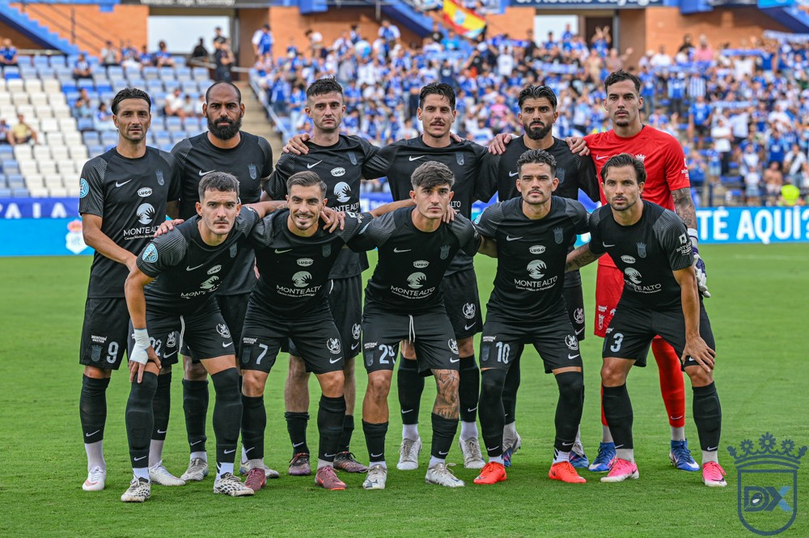

Cádiz ask the Federation to bring forward the Copa derby at Chapín to 20:00

Photo: Diario XerecistaCádiz CF have asked the Federation to bring forward the Copa del Rey tie against Xerez CD at Chapín to 20:00. The match is currently scheduled for Wednesday 28 October at 21:00, and the change would make it easier for their fans to travel en masse.
Cádiz first asked Xerez CD to change the kick-off time, but the blue-and-whites refused. Following that refusal, Cádiz have turned to the Royal Spanish Football Federation (RFEF).
For now it is only a request. The official kick-off remains 21:00 until the Federation responds.
Xerez fans wait to see what happens
It remains to be seen how Xerez fans would take the change. Some supporters who already have their tickets finish work around that time and could struggle to reach the stadium on time.
The match was already drawing attention: it has been declared high-risk and the City Council will remove the discus-throwing structure at Chapín for the game.
🇪🇸 Leer en español ← Back to home